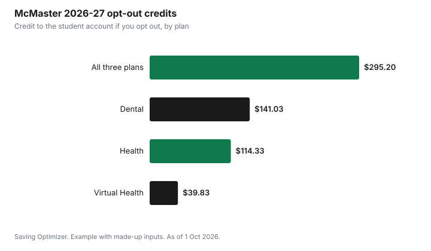

Education · Canada
Student Health and Dental Plan Opt-Out in Canada: Keep, Coordinate or Drop
Opt out of your student health and dental plan only if you already have comparable extended health and dental coverage, such as a parent's or partner's workplace plan, and you would not gain anything by keeping both. Provincial health insurance does not count: York's student union says OHIP and UHIP are not alternative coverage. Opt-out windows are short and strict. At McMaster the 2026-27 window was 1 to 30 September 2026 with no extensions; at York the fall window runs to 16 October 2026. If your other plan does not cover 100% of costs, keeping both and coordinating benefits can leave you paying less out of pocket than opting out.
Key takeaways
- Most full-time students are enrolled automatically and billed through student fees.
- You need comparable private extended health and/or dental coverage to opt out.
- OHIP and UHIP are not alternative coverage for York's opt-out.
- Windows are short: McMaster closed 30 Sep 2026; York's fall window closes 16 Oct 2026.
- Most plans require a new opt-out every year.
- Example with made-up inputs: keeping both plans can cut a $180 dental bill to $0 out of pocket.
How student plans work
Most Canadian universities and colleges have a student union or association health and dental plan that was approved by student referendum and is charged with your fees. Alumo, a student benefits administrator that says it supports over 1.5 million students across Canada, says most students are enrolled automatically as part of their tuition or student fees and that each plan has a set change-of-coverage and opt-out period every year for students who already have coverage elsewhere. It describes these plans as covering things a provincial health plan does not, such as extended health, dental, prescription drugs, mental health support and vision care.
The details are set by each union, so the rules below come from specific plans. Look up your own plan before you act. Eligibility is often tied to your course load. McMaster's student union, for example, says its health, dental and virtual health plans are automatically provided to eligible undergraduates registered in 18 or more academic units across the fall and winter terms.
2026-27 deadlines and refunds at three schools
These three examples show how much the rules vary. All amounts and dates come from each student union's own page as of 1 October 2026.
| Plan | Fall opt-out window | Refund or credit | Notes |
|---|---|---|---|
| McMaster Students Union | 1 to 30 Sep 2026; no exceptions or extensions | Health $114.33, Dental $141.03, Virtual Health $39.83, credited to the student account | Needs comparable private extended health and/or dental coverage |
| York Federation of Students | 1 Sep to 16 Oct 2026 | Plan fee refunded or reversed on the student account 2 to 3 weeks after submission | OHIP and UHIP do not count; winter starters opt out 1 Jan to 5 Feb 2027; no summer opt-out |
| TRU Students' Union | Deadline 22 Sep 2026 for academic students, through myTRU | Not stated on the opt-out page | Suggests coordinating benefits before opting out |
At McMaster, the three credits add up to $295.20 if you opt out of all three plans. That is the most you can save there, and you only get it if you have other coverage. York says that if you do not receive a confirmation email with an application number, your opt-out probably did not go through, and that a refund that does not arrive two to three weeks after submission probably means your application was declined. York also says the plan fee is charged every year, so you need to opt out each academic year.
What counts as comparable coverage
Every plan above requires other extended coverage, not just provincial health insurance. McMaster says you may opt out only if you have comparable extended health and/or dental coverage through another private insurance plan, and that having another type of health coverage does not automatically qualify. York says your request will be denied without alternate health and dental insurance comparable to what the YFS offers, and names OHIP and UHIP as not acceptable.
Typical sources of comparable coverage are a parent's workplace plan, a spouse's or partner's plan, or your own employer's plan. Many workplace plans only cover dependent children up to a certain age and while they are in school, so check your parent's plan booklet for its age and student rules before you rely on it. You will usually need the insurer's name and the policy or group number to complete the opt-out form; McMaster asks for information about your external plan, and York's form needs your alternate insurance details.
| Item | Where to find it |
|---|---|
| Insurer name | Your benefits card or plan booklet |
| Group or policy number | Benefits card or the plan member's HR portal |
| Plan member's name | Usually your parent, partner or employer |
| Coverage for you as a dependant | Plan booklet: age limits and student status rules |
| What the other plan does not cover | Compare dental, vision, mental health and drugs |
| Your union's deadline | The student union's health plan page |
Coordinate instead of opting out
McMaster's page says that if your other plan does not cover 100% of your expenses, you may want to keep the student plan and use both together to coordinate benefits and potentially reduce out-of-pocket costs. TRU's union makes the same point: the two plans can work together to give you the maximum level of coverage. Coordinating means one plan pays first and the second plan pays some or all of what is left, up to its own limits.
Whether coordination is worth the fee depends on how much you use. If you rarely claim, the opt-out credit is a sure saving. If you expect regular dental visits, prescriptions, therapy or glasses, the second plan can pay back more than it costs. Look at the services you actually used last year, then estimate what the second plan would add.
Example with made-up inputs: opt out or coordinate
These numbers are an example with made-up inputs. They are not any plan's real coverage. A student's parent plan pays 80% of dental and the student plan pays 70% of dental, both up to annual limits. The student expects two cleanings at $180 each and one $400 filling, $760 in total. With the parent plan alone, the student pays 20%, or $152. With both plans, the student plan picks up the $152 remainder, which is within its limit, so the student pays $0. If the student plan's dental fee is $140, keeping it saves $12 net on dental alone; if the student only expected one cleaning, opting out would win.
| Scenario | Dental bills | Student pays, parent plan only | Student pays, both plans | Student plan fee |
|---|---|---|---|---|
| Heavy use | $760 | $152 | $0 | $140 |
| Light use (one cleaning) | $180 | $36 | $0 | $140 |

In the light-use case, keeping the student plan costs $140 to save $36, so opting out is better. In the heavy-use case, the plan roughly pays for itself on dental, and anything it adds on drugs, vision or therapy is extra. Run your own numbers with your plan's real percentages and maximums.
Timing traps
- Windows usually open when the term starts and close within weeks; miss it and you pay for the year.
- York has a separate winter window only for students who start in January.
- York says there is no opt-out period in the summer term.
- York says benefits cannot be used for about the first month and a half while enrolment is confirmed, though claims for that period can be submitted later.
- You often have to opt out again every year, even if nothing changed.
- Keep the confirmation email or number until the credit shows on your account.
Adding dependants instead
If you have a partner or children without coverage, the student plan may be able to cover them for an extra fee. York says students can extend coverage to a spouse, common-law partner or children, with documentation and an additional amount on top of the individual fee, and that dependants must be enrolled and paid for each year. Compare that cost with buying a private plan.
Steps
- Find your student union's health plan page and note the opt-out deadline.
- Confirm you are covered as a dependant on another private plan, and until what age.
- List what you used last year: dental, drugs, vision, therapy.
- Compare the opt-out credit with what the student plan would pay on top of your other plan.
- If opting out, submit before the deadline and save the confirmation.
- Set a reminder for next September; most plans need a new opt-out each year.
For the rest of your first-year budget, see first-year university costs and back-to-school costs and fees.
Sources
- McMaster Students Union, Opt-Out, msumcmaster.ca, as of 1 Oct 2026. 2026-27 window 1 to 30 Sep 2026, eligibility, comparable coverage rule, credit amounts.
- York Federation of Students, Health and Dental Plan, yfs.ca, as of 1 Oct 2026. Fall 2026 and Winter 2027 windows, OHIP and UHIP rule, refund timing, annual opt-out, dependants, blackout period.
- TRU Students' Union, Opting Out of the Health and Dental Plan, trusu.ca, as of 1 Oct 2026. Deadline 22 Sep 2026 and coordination of benefits.
- Alumo, student benefits FAQ, mystudentplan.ca, as of 1 Oct 2026. Automatic enrolment and annual opt-out period.
- The plan percentages, bills and fee in the example are an example with made-up inputs.
Frequently asked questions
Can I opt out of my student health plan if I have OHIP?
Not at York. The York Federation of Students says OHIP and UHIP are not considered alternative coverage. Plans generally require comparable private extended health and/or dental coverage.
When is the student health plan opt-out deadline?
It depends on the school. McMaster's 2026-27 window was 1 to 30 September 2026 with no extensions. York's fall window runs from 1 September to 16 October 2026. TRU's deadline for academic students was 22 September 2026.
How much do I get back if I opt out?
At McMaster, the 2026-27 credits are $114.33 for health, $141.03 for dental and $39.83 for virtual health, credited to your student account. Other schools set their own fees.
Do I have to opt out every year?
Often yes. York says the plan fee is charged every year, so you need to opt out each academic year unless you want to keep the coverage.
Should I keep both plans?
If your other plan does not cover 100% of costs and you use dental, drugs or vision regularly, keeping both and coordinating benefits can reduce what you pay. McMaster and TRU both suggest comparing before you opt out.
Can I add my partner or children to a student plan?
Some plans allow it for an extra fee. York says students can add a spouse, common-law partner or children with documentation and an additional payment each year.
Researched and drafted with AI assistance and fact-checked against official Canadian sources. How we create content.
Disclosure: Saving Optimizer may earn a commission if a partner link is added later, such as an insurance offer type. No partnership is claimed on this page. Education only, not insurance advice.